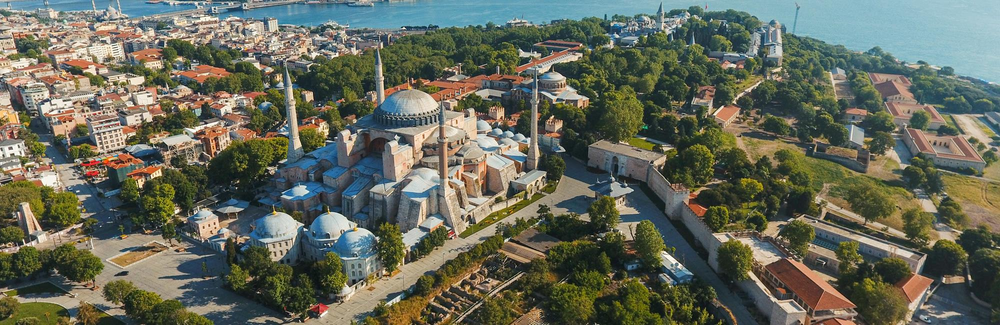
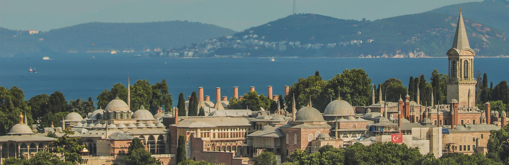
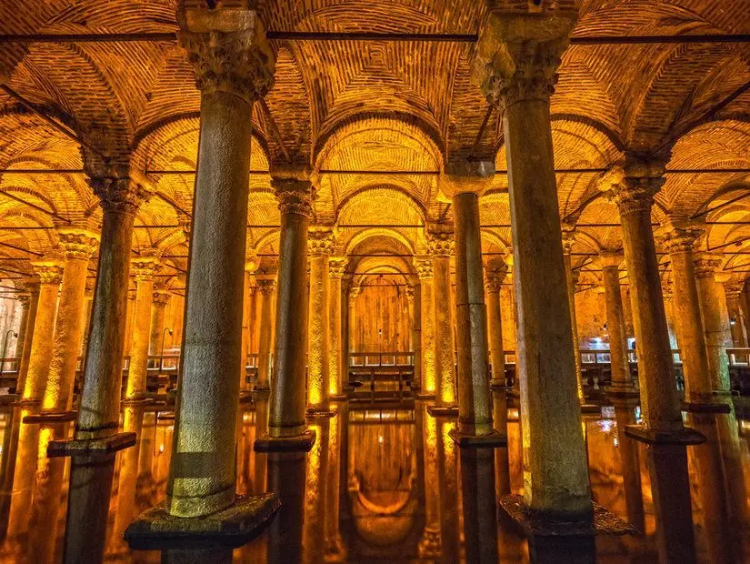
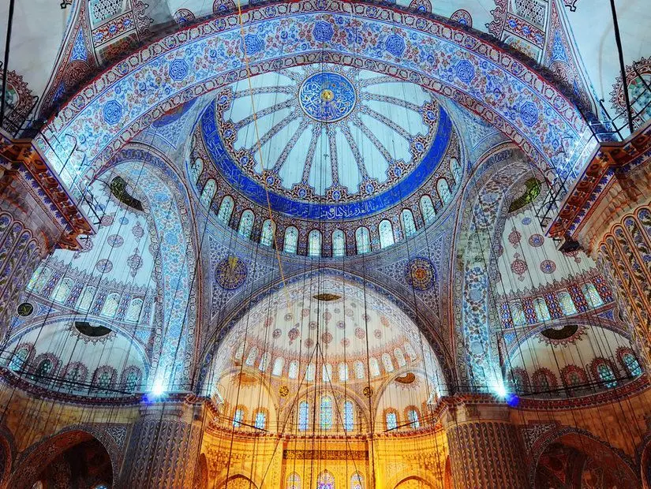
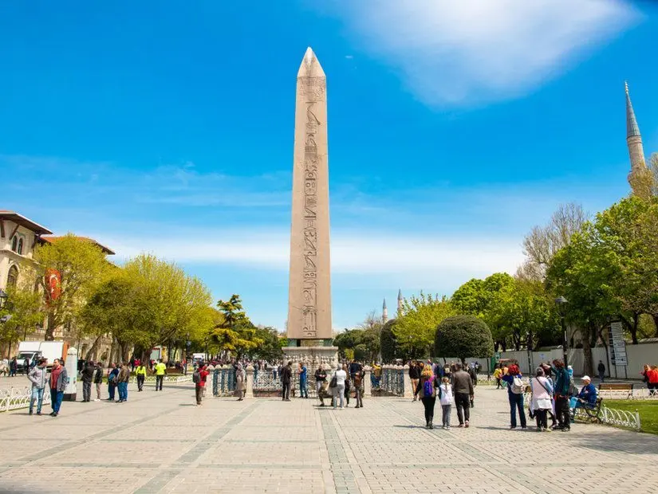
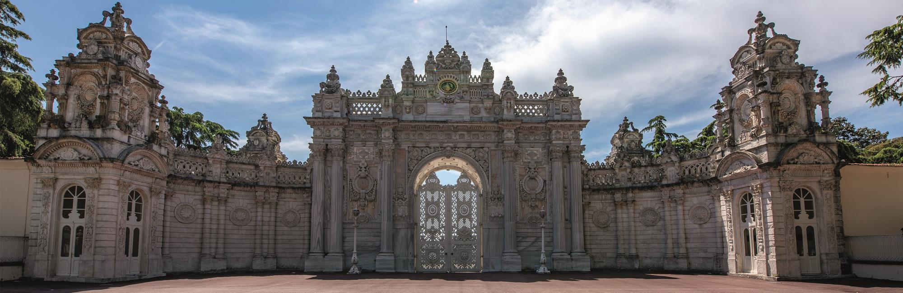
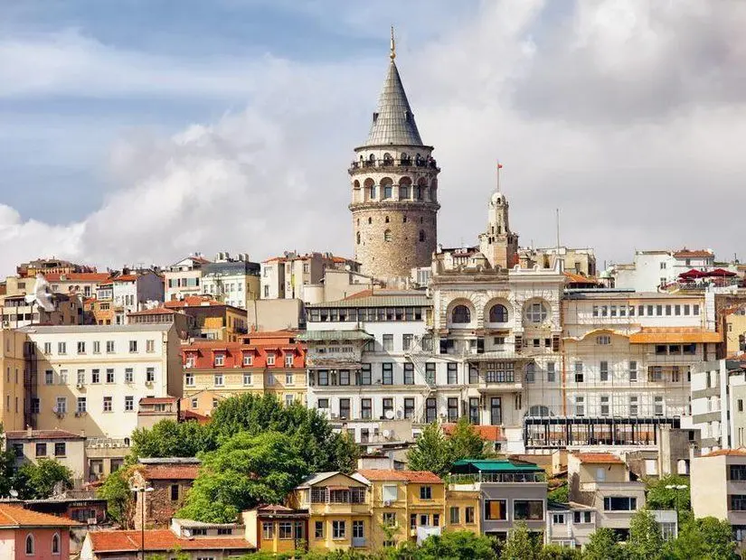
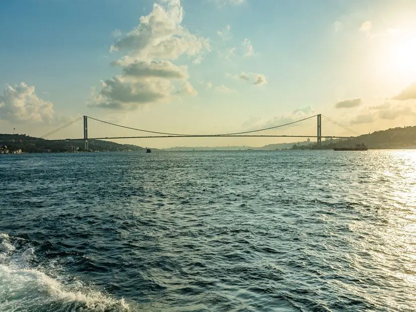
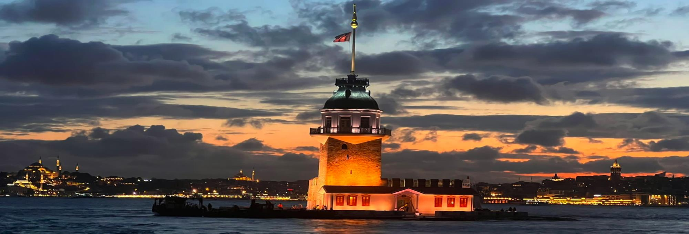

Yenikapı’da yapılan arkeolojik kazılarda ortaya çıkan bulgular, İstanbul’un tarihinin 8 bin 500 yıl öncesine dayandığını
ortaya koymuştur. Kuruluşundan itibaren İstanbul, tarihte birçok devletin egemenliği altında gelişmiş ve çeşitli kültürlerin
merkezi olmuştur.
1- Ayasofya Camii

İstanbul’da gezilecek yerler listesinin ilk sırasına koyabileceğimiz çok sayıda yer var ve seçim yapmak çok zor ama
Ayasofya da ilk sıralarda olmayı hak ediyor. Doğu Roma İmparatoru Konstantios’un 360 yılında inşa ettirdiği Ayasofya,
dünyanın en eski katedrallerinden biri.
O dönemlerde Megale Ekklesia adıyla anıldığı bilinen Ayasofya, günümüzdeki görünümüne en yakın halini İmparator
Justinianos’un görevlendirdiği Trallesli Anthemios ve Miletoslu İsidoros’un çalışmaları sonunda kazanmış. İki mimarın
çalışmalarıyla 5 yıl 10 ayda yapımı tamamlanan Ayasofya, o zamanın diğer yapılarına kıyasla dünyanın en kısa sürede inşa
edilen katedrali olmuş.
5. yüzyılda yapıya Hagia Sophia adı verilmiş ve 1453’te İstanbul fethedilene kadar bu adı taşımış. Fatih Sultan Mehmet,
İstanbul’u aldıktan sonra Ayasofya’nın cami olmasını emretmiş ve yapının minareleri Mimar Sinan tarafından inşa edilmiş.
1935 yılında müze olan Ayasofya, 2020 yılında ise tekrar ibadete açıldı.
2- Topkapı Sarayı

İstanbul’un en turistik bölgesi olan Tarihi Yarımada’da bulunan Topkapı Sarayı, İstanbul’da gezilecek yerler listesinin ilk
sıralarında olmalı elbette. Fatih semtine bağlı Sarayburnu’nda bulunan Topkapı Sarayı, İstanbul fethedildikten sonra inşa
edilmiş ve 400 yıl süreyle Osmanlı İmparatorluğu’nun idare merkezi olarak hizmet vermiş.
Osmanlı Dönemi’nin ihtişamlı tarihine tanıklık eden sarayda entrikalar ve hüzünlü zamanlar da yaşanmış. 3 Nisan 1924’te
müze haline getirilen Topkapı Sarayı, aynı zamanda Türkiye Cumhuriyeti’nin ilk müzesi. 300.000 metrekarelik bir alanı
kapladığı ve yaklaşık 300.000 tane arşiv belgesine ev sahipliği yaptığı için dünyada bulunan saray müzelerinin en
büyüklerinden biri.
Müzeyi gezmeye gittiğinde Harem bölümü, Hırka-ı Saadet Dairesi, Has Oda, Babü’s Saade ve Köşkler Bahçesi’ni görebilirsin.
Ayrıca padişahların portrelerine, kıyafetlerine ve silahlarına ev sahipliği yapan İstanbul Kitaplığı’nı da mutlaka ziyaret
etmelisin. Sarayı Salı günleri dışında hafta için 10:00 ile 17:30, hafta sonu ise 10:30 ile 17:30 arasında gezebilirsin.
3- Yerebatan Sarnıcı

Bizans İmparatorluğu döneminden İstanbul’da kalan en değerli yapılardan Yerebatan Sarnıcı. 532 yılında İmparator Justinianus’un
emri üzerine inşa edilen sarnıç, o yıllarda sarayın ve halkın su ihtiyacı için kullanılırmış. Hatta İstanbul’un fethinden sonra
da bir süre boyunca su kaynağı olarak kullanımı devam etmiş.
Geçmişte sarnıç üzerinde Stoa Bazilikası bulunduğu için Bazilika Sarnıcı ve suyun içinden çıkan sütunlar yüzünden Yerebatan
Sarayı olarak da bilinirmiş. 140 metre uzunlukta ve 70 metre genişlikte olan Yerebatan Sarnıcı’ndaki en gizemli eser ise
Medusa Başı. Sarnıcın kuzeybatısındaki konumlanan iki sütunun altında bulunan heykel, Roma Dönemi’nin en önemli eserlerinden
biri ama buraya nasıl geldiği bilinmiyor.
4- Sultan Ahmet Cami

İstanbul’un en meşhur camisi olan Sultan Ahmet Camii, sadece yerli turistler arasında değil yabancı turistler arasında da
oldukça ünlü. Yabancı turistler camiyi Mavi Camii anlamına gelen Blue Mosque adıyla tanıyorlar. Bunun en önemli nedeni ise
caminin içinin 21 bin 43 tane İznik çinisiyle döşenmesi ve masmavi bir görüntüye sahip olması.
Sultan I. Ahmet’in emri üzerine 17. yüzyılda Mimar Sinan’ın öğrencilerinden olan Sedefkar Mehmet Ağa tarafından inşa edilen
cami, Ayasofya’nın tam karşısında konumlanıyor. Sultan Ahmet Camii’nin 16 tane şerefesi bulunuyor ve bu 16 şerefe, Sultan
I. Ahmet’in Osmanlı İmparatorluğu’nun 16. hükümdarı oluşunu simgeliyor. 43 metre yükseklikteki kubbesinin çapı ise 23,5
metre. Tüm bunlar ve caminin külliyesi bir araya geldiğinde Sultan Ahmet Camii, İstanbul’da bulunan en büyük yapılar arasında
yer alıyor. Cami ibadete açık olduğu için Cuma günleri ve dini bayramlarda çok kalabalık olabiliyor. Bu nedenle camiyi mimari
açıdan görmek için gezmeye gittiğinde daha sakin olabilecek günleri tercih edebilirsin.
5- Sultan Ahmet Meydanı

Sultanahmet Meydanı, İstanbul’da yapılan turistik gezilerin başlangıç noktası. Aynı zamanda turistik Sultanahmet otelleri
de bu meydanın çevresinde konumlanıyor. Roma İmparatorluğu’nun bölgede hüküm sürdüğü yıllarda hipodrom olarak kullanılan
meydan, Bizans İmparatorluğu’nun hakimiyetindeyken de hipodrommuş. Bu yüzden At Meydanı olarak bilinirmiş.
O dönemlerde yerli halk, hep bu meydanda toplanıp eğlenirmiş. Günümüzde kalıntıları hala görülebilen Obelisk, Yılanlı
Sütun ve Örme Dikilitaş gibi dikilitaşlar hipodromu ikiye bölmek için kullanılırmış. Şimdilerde ise Sultanahmet Meydanı’nda
çekilen fotoğrafların en önemli öğeleri arasındalar.
Meydan günümüzdeki adını, İstanbul’da gezilecek yerler deyince ilk akla gelen camilerden olan Sultanahmet Camii 1616 yılında
yapıldıktan sonra almış. Meydanı gördükten sonra camiyi de mutlaka gezmelisin. Camiden sonra ise gezine Ayasofya, Topkapı
Sarayı, İbrahim Paşa Sarayı, Alman Çeşmesi ve Aya İrini Kilisesi gibi gezilecek yerlerle devam etmelisin. Tabii ki burada
meşhur Sultanahmet köftesinin de tadına bakman gerek. Bu köfteden yemeden dönersen İstanbul’a gelmiş sayılmazsın.
6- Dolmabahçe Sarayı

Mustafa Kemal Atatürk’ün hayata gözlerini yumduğu bu sarayın hepimizin kalbindeki yeri büyük. Bu nedenle de Dolmabahçe
Sarayı, İstanbul’da gezilecek yerler listesinin belki de en duygusal maddelerinden biri.
Dolmabahçe Sarayı, 1856 yılında Sultan Abdülmecit’in emretmesi üzerine inşa edilmiş. Abdülmecit, bu sarayın Avrupai bir
tarza sahip olmasını ve sadece güzelliklerden oluşmasını istemiş. 285 tane oda, 26 adet salon, 6 hamam ve 68 tuvaletin
bulunduğu sarayın yapımı padişaha oldukça pahalıya olmuş ve padişah o kadar özenerek yaptırdığı İstanbul’un 3. en büyük
sarayında sadece 5 yıl oturabilmiş. Abdülmecit’ten sonra gelen padişahlar tarafından da farklı şekillerde kullanılan saray,
Türkiye Cumhuriyeti kurulduğu zaman da yeni devletin modern yüzü olarak hizmet etmiş.
7- Galata Kulesi

İstanbul’un siluetini oluşturan yapılardan biri olan Galata Kulesi, o kadar çok turist ağırlıyor ki her daim önünde upuzun kuyruklar oluşuyor.
Dünyadaki en eski kuleler arasında yer alan Galata Kulesi, Bizans İmparatoru Justinianos’un isteğiyle 500’lü yıllarda inşa edilmiş.
Günümüzdeki görünümünü ise 1340’lı yıllarda kazanmış. Yangın ve depremler yüzünden harap olan kulenin en son onarımı 1967 yılında yapılmış.
8- İstanbul Boğazı

İstanbul denilince ilk akla gelen yerlerden biri İstanbul Boğazı. İstanbul’a tüm o güzelliğini katan yer bile diyebiliriz
hatta. Marmara Denizi ve Karadeniz’in birleştiği nokta olan İstanbul Boğazı’nı düz bir çizgi haline getirirsek 32 kilometre
uzunluğa sahip oluyor.
Anadolu Hisarı ve Rumeli Hisarı arasında uzanan İstanbul Boğazı’nda turlamak istersen Şehir Hatları tarafından gidiş-dönüş
düzenlenen boğaz turlarına katılabilirsin. Uzun ve kısa olmak üzere iki çeşit tur düzenlendiğini de belirtelim. Ayrıca tek
yön olarak da boğaz turu seferleri yapılıyor. Hatta boğazın akşam saatlerinde güzelliğini de görebilmemiz için mehtap turları
da düzenliyorlar.
Boğazı uzaktan izlemek istersen Büyükada, Heybeliada ya da Kınalıada’ya gidip seyir keyfi yaşayabilirsin. Ayrıca boğaz
manzaralı restoranlarda manzaranın güzelliğini seyrederek yemek yiyebilirsin.
9- Kız Kulesi

stanbul siluetini oluşturan bir diğer yapı ise Kız Kulesi. İstanbul’un en romantik adreslerinden biri olan kule, Üsküdar
ilçesinin Salacak açıklarında konumlanıyor. Kız Kulesi’nin tam olarak ne zaman inşa edildiğine dair net bir kaynak bulunmuyor
ama bazı kaynaklarda milattan önce 341 yılında yapılaşma sürecinin başladığı söyleniyor.
Birçok farklı efsaneye konu olan Kız Kulesi, geçmiş zamanlarda Damalis ve Leandros isimleri ile de anılmış. Damalis, Atina
Kralı Kharis’in karısının adından gelen bir isimmiş. Damalis öldüğünde bu sahillerde gömüldüğü için kuleye bu isim verilmiş.
Bizans İmparatorluğu yıllarında ise küçük kale anlamındaki Arcla ismiyle de tanınmış. İstanbul fethedildikten sonra adada bulunan
kule yıkılmış ve yerine ahşap bir kule yaptırılmış. Ahşap olması yüzünden yangına dayanamayan kule 1725 yılında yeniden inşa
edilmiş.
Tarih boyunca gemilerden vergi toplama, savunma, karantina hastanesi, radyo istasyonu gibi amaçlarla kullanılan Kız Kulesi,
günümüzde romantik yemekler ve evlilik teklifleri için ilk akla gelen yerlerden biri. Kule günümüzde hem müze hem de restoran
olarak ziyaret ediliyor. Salacak’tan 15 dakikada bir kalkan teknelere binerek Kız Kulesi’ne kolayca ulaşabilirsin.
10- Kapalı Çarşı

İstanbul’da gezilecek yerler arasında Türkiye’nin tüm dokularını bir arada bulabileceğin yer Kapalı Çarşı. Beyazıt’ta bulunan
çarşı, yabancı turistler tarafından Grand Bazaar olarak tanınıyor. Kapalı Çarşı Fatih Sultan Mehmet’in padişah olduğu yıllarda
inşa edilmiş ve yaklaşık 550 yıldır varlığını sağlam bir şekilde sürdürüyor.
İlk açıldığında Osmanlı İmparatorluğu’nun gelirini artırmak amacını taşıyan çarşı, zaman içerisinde büyümüş ve bölgedeki en
önemli ticaret merkezi haline gelmiş. Dünyadaki en eski alışveriş merkezi olan Kapalı Çarşı, 45.000 metrekarelik bir alana
kurulu olmasıyla aynı zamanda dünyanın en büyük alışveriş merkezlerinden. Kapalı Çarşı’nın adı Evliya Çelebi’nin Seyahatnamesi’nde
de geçiyor. Bunun dışında başka seyahat kitaplarında da büyüklüğünden ve içindeki dükkanlardan bahsedilmiş.
Neredeyse 4000 tane dükkana ev sahipliği yapan Kapalı Çarşı, kuyumcularıyla ünlü. Kuyumcularının yanında baharatlar, halılar,
kilimler ve kumaşlar da bulunuyor. Kapalı Çarşı’dan hiçbir şey almayacak olsan bile dükkanlar arasında mutlaka gezinmelisin
çünkü eski İstanbul’un o nostaljik atmosferini hissetmeden geri dönmek olmaz.